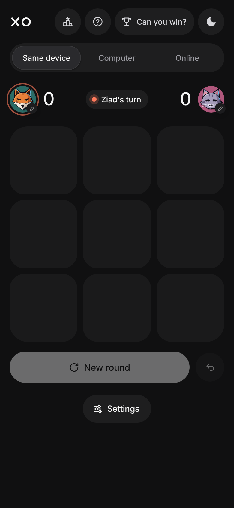
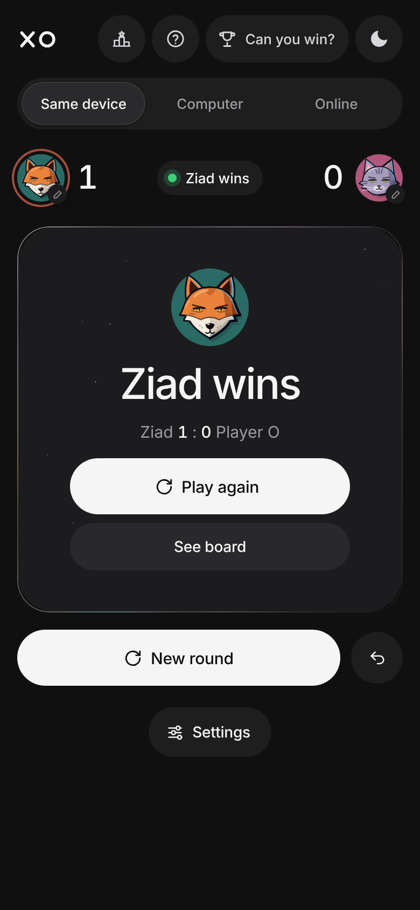
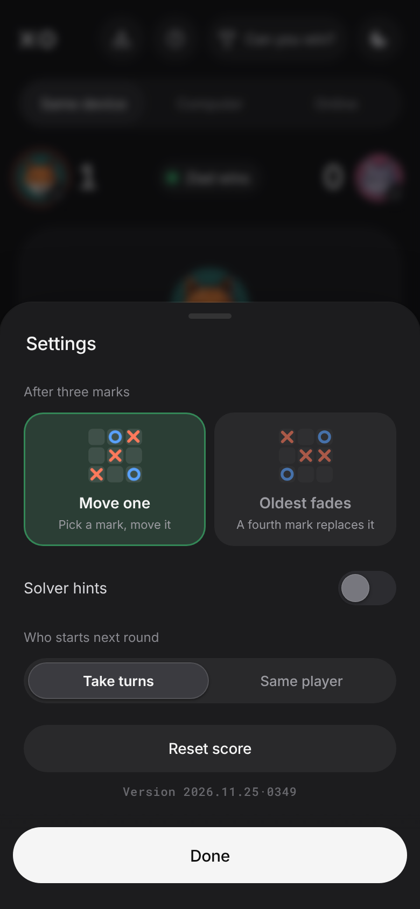

Each mock-up is drawn on a real screenshot of the game; the green ring marks what is new. On Android, every option opens Chrome’s own install prompt. On iPhone there is no prompt, so the same button opens a short how-to sheet (option E). All of them disappear once the game is installed. My pick is C + B: always findable in Settings, plus one well-timed nudge after a win.


